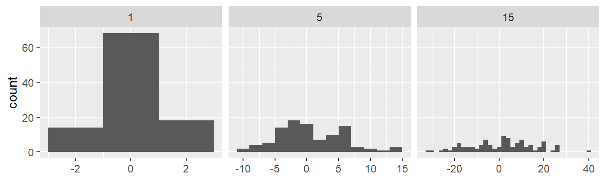
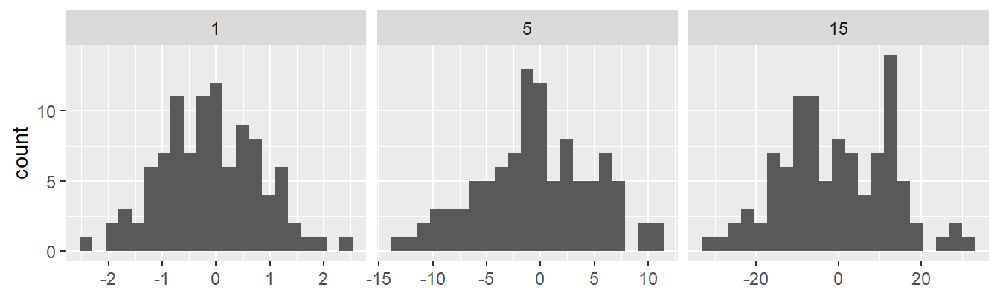
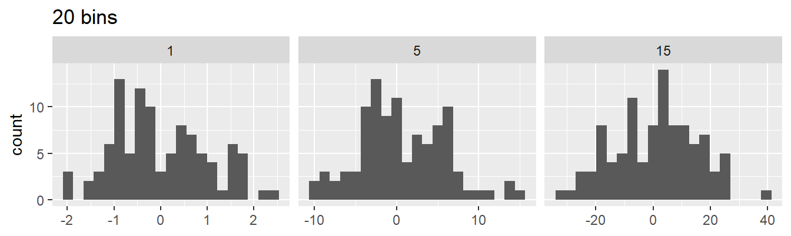
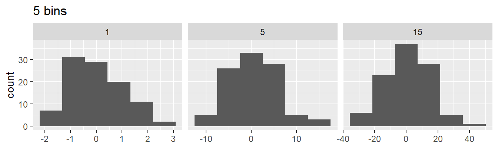

Function factories
Learning objectives:
- Understand what a function factory is
- Recognise how function factories work
- Learn about non-obvious combination of function features
- Generate a family of functions from data
What is a function factory?
A function factory is a function that makes (returns) functions
Factory made function are manufactured functions.

Function factory | Credits: epsis.com
How does a function factory work?

How does it work? | Credits: kakaakigas.com/how-it-works/
power1() is the function factory and square() and cube() are manufactured functions.
Important to remember
- R has First-class functions (can be created with
function()and<-)
R functions are objects in their own right, a language property often called “first-class functions”
– Section 6.2.3
- Functions capture (enclose) environment in which they are created
#> <environment: R_GlobalEnv>#> <environment: 0x000001c9f325a8f8>- Functions create a new environment on each run
Fundamentals - Environment
- Environment when function is created defines arguments in the function
- Use
env_print(fun)andfn_env()to explore
#> <environment: 0x000001c9f4370070>
#> Parent: <environment: global>
#> Bindings:
#> • exp: <lazy>#> [1] 2
Blue indicates environment, arrows bindings
Fundamentals - Forcing
- Lazy evaluation means arguments only evaluated when used
- “[can] lead to a real head-scratcher of a bug”
- Only applies if passing object as argument
- Here argument
2evaluated when function called
So use force()! (Unless you want it to change with the x in the parent environment)
Forcing - Reiterated
Only required if the argument is not evaluated before the new function is created:
Fundamentals - Stateful functions
Because
- The enclosing environment is unique and constant, and
- We have
<<-(super assignment)
We can change that enclosing environment and keep track of that state across iterations (!)
<-Assignment in current environment<<-Assignment in parent environment
new_counter <- function() {
i <- 0
function() {
i <<- i + 1 # second assignment (super assignment)
i
}
}
counter_one <- new_counter()
counter_two <- new_counter()
c(counter_one(), counter_one(), counter_one())#> [1] 1 2 3#> [1] 1 2 3“As soon as your function starts managing the state of multiple variables, it’s better to switch to R6”
Fundamentals - Garbage collection
- Because environment is attached to (enclosed by) function, temporary objects don’t go away.
Cleaning up using rm() inside a function:
Useful Examples - Histograms and binwidth
Useful when…
- You need to pass a function
- You don’t want to have to re-write the function every time (the default behaviour of the function should be flexible)
For example, these bins are not appropriate
sd <- c(1, 5, 15)
n <- 100
df <- data.frame(x = rnorm(3 * n, sd = sd), sd = rep(sd, n))
ggplot(df, aes(x)) +
geom_histogram(binwidth = 2) +
facet_wrap(~ sd, scales = "free_x") +
labs(x = NULL)
We could just make a function…
binwidth_bins <- function(x) (max(x) - min(x)) / 20
ggplot(df, aes(x = x)) +
geom_histogram(binwidth = binwidth_bins) +
facet_wrap(~ sd, scales = "free_x") +
labs(x = NULL)
But if we want to change the number of bins (20) we’d have to re-write the function each time.
If we use a factory, we don’t have to do that.
binwidth_bins <- function(n) {
force(n)
function(x) (max(x) - min(x)) / n
}
ggplot(df, aes(x = x)) +
geom_histogram(binwidth = binwidth_bins(20)) +
facet_wrap(~ sd, scales = "free_x") +
labs(x = NULL, title = "20 bins")
ggplot(df, aes(x = x)) +
geom_histogram(binwidth = binwidth_bins(5)) +
facet_wrap(~ sd, scales = "free_x") +
labs(x = NULL, title = "5 bins")
Similar benefit in Box-cox example
Useful Examples - Wrapper
Useful when…
- You want to create a function that wraps a bunch of other functions
For example, ggsave() wraps a bunch of different graphics device functions:
# (Even more simplified)
plot_dev <- function(ext, dpi = 96) {
force(dpi)
switch(
ext,
svg = function(filename, ...) svglite::svglite(file = filename, ...),
png = function(...) grDevices::png(..., res = dpi, units = "in"),
jpg = ,
jpeg = function(...) grDevices::jpeg(..., res = dpi, units = "in"),
stop("Unknown graphics extension: ", ext, call. = FALSE)
)
}Then ggsave() uses
ggsave <- function(...) {
dev <- plot_dev(device, filename, dpi = dpi)
...
dev(filename = filename, width = dim[1], height = dim[2], bg = bg, ...)
...
}Otherwise, would have to do something like like a bunch of if/else statements.
Useful Examples - Optimizing
Useful when…
- Want to pass function on to
optimise()/optimize() - Want to perform pre-computations to speed things up
- Want to re-use this for other datasets
(Skipping to final results from section)
Here, using MLE want to to find the most likely value of lambda for a Poisson distribution and this data.
We’ll create a function that creates a lambda assessment function for a given data set.
We can use this on different data sets, but here use ours x1
Use optimise() rather than trial and error
#> $maximum
#> [1] 32.09999
#>
#> $objective
#> [1] -30.26755Result: Highest log-probability is -30.3, best lambda is 32.1
Function factories + functionals
Combine functionals and function factories to turn data into many functions.
names <- list(
square = 2,
cube = 3,
root = 1/2,
cuberoot = 1/3,
reciprocal = -1
)
funs <- purrr::map(names, power1)
names(funs)#> [1] "square" "cube" "root" "cuberoot" "reciprocal"#> [1] 8#> [1] 9Avoid the prefix with
with()-with(funs, root(100))- Temporary, clear, short-term
attach()-attach(funs)/detach(funs)- Added to search path (like package function), cannot be overwritten, but can be attached multiple times!
rlang::env_bind-env_bind(globalenv(), !!!funs)/env_unbind(gloablenv(), names(funs))- Added to global env (like created function), can be overwritten
Meeting Videos
Cohort 1
Cohort 2
Cohort 3
Cohort 4
Cohort 5
Cohort 6
Meeting chat log
01:02:25 Trevin: I'm good with combining 👍
01:02:57 Oluwafemi Oyedele: I agree with combining the chapter!!!